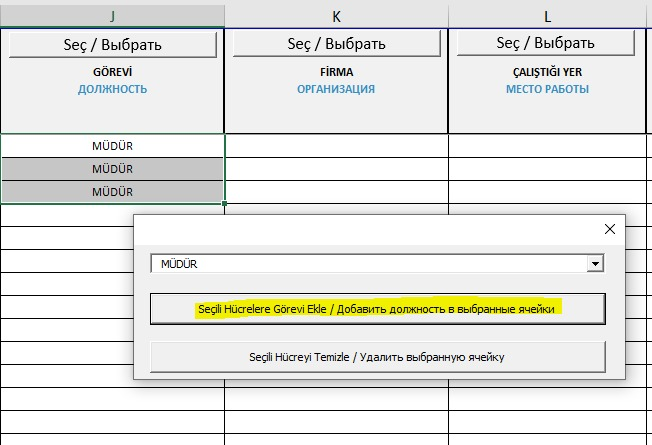
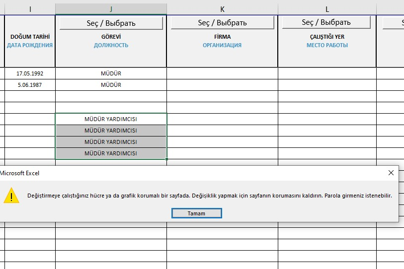
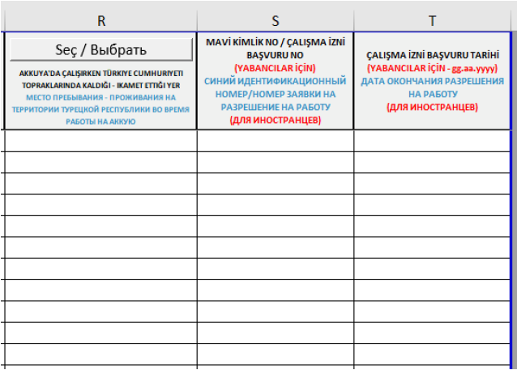

Для получения разрешения на вход на площадку (процедура одинакова как для посетителей, так и для постоянных сотрудников) применяется двухэтапный процесс.
1. Этап:
Требуется официальное письмо, подписанное руководителем компании или уполномоченным лицом (с доверенностью), адресованное Директору по безопасности Артему Зародышу и Совместному директору по безопасности Селиму Темрену, с просьбой предоставить разрешение.
2. Этап:
После получения разрешения, ниже перечисленные документы должны быть отправлены на наш адрес id@t2ic.com через электронную почту:
• Сканирование паспорта (все страницы, в формате PDF)
• Диплом/Сертификат
• Письмо о назначении/Назначение на работу
• Информация о мерах предосторожности на площадке
• Форма согласия на вход на площадку
• Excel-таблица с данными персонала (должна быть заполнена полностью и в соответствии с инструкциями)
• Документ, подтверждающий, что сотрудник работает в компании
ЗАМЕЧАНИЕ: Для сотрудников с назначением карта или срок доступа будет действовать только на время назначения.
Физическая передача документов не требуется.
Важно, чтобы документы были правильно расположены и правильно названы. Это ускорит процесс обработки документов. Документы должны быть названы в соответствии с фамилией и именем, как в паспорте, большими буквами, и для каждого человека должны быть созданы отдельные файлы. Пожалуйста, называйте свои документы по номеру паспорта, упаковывайте их в формат 7Z и отправляйте в формате PDF.
ЗАМЕЧАНИЕ: Если сотрудников несколько, документы должны быть названы по имени файла. Например, все сканированные паспорта должны быть собраны в один файл с названием "PASAPORT".
Пример: В файле для Карины Сазановой:
KARINA SAZANOVA PASAPORT
KARINA SAZANOVA OCHIKH RIZA
KARINA SAZANOVA YASAKLI FALIYETLER
ВАЖНО: Если сотрудник приходит от другой компании, необходимо приложить контракт этой компании с компанией на площадке (первая и последняя страница).
• Также, без медицинской формы, можно предоставить вход для посетителей на срок не более 5 рабочих дней. Для более длительного пребывания необходимо связаться с subcontractor@t2ic.com.
Заявление о явном согласии в рамках процедур доступа на площадку Атомной Электростанции "Аккую"
Этот документ подтверждает, что в рамках процедур доступа на площадку АЭС "Аккую" личные данные будут записываться, храниться, обновляться, классифицироваться и обрабатываться; а также, в случаях, разрешенных действующим законодательством, с явным согласия субъекта данных, передаваться и раскрывать третьим лицам.
1. Документ состоит в общей сложности из 2 страниц.
- На первой странице в обозначенное поле необходимо вписать Фамилию и Имя сотрудника.

2. Вторая страница содержит поля для личной информации сотрудника и его подписи:
- В два поля, обозначенные стрелкой №1, нужно вписать Фамилию и Имя сотрудника.
- В два поля, обозначенные стрелкой №2, сотрудник должен поставить свою подпись.
- В поле, обозначенное стрелкой №3, необходимо вписать номер Т.Ц. (идентификационный номер сотрудника).
- В поле, обозначенное стрелкой №4, необходимо указать дату подготовки документа.
- В поле, обозначенное стрелкой №5, следует указать номер телефона сотрудника.
- В поле, обозначенное стрелкой №6, необходимо вписать электронную почту сотрудника.

Информация о документе, касающемся соблюдения правил на площадке АЭС "Аккую":
Документ состоит из двух частей, и в обеих частях должны быть заполнены одинаковые данные:
• "Фамилия Имя" (поле, отмеченное стрелкой №1): Фамилия и Имя сотрудника должны быть указаны в этих полях.
• "ТЦ/Номер паспорта" (поле, отмеченное стрелкой №2): Нужно указать Т.Ц. (идентификационный номер) сотрудника или номер паспорта (если сотрудник не является гражданином Турции).
• "Компания" (поле, отмеченное стрелкой №3): В это поле необходимо правильно и полно указать название компании, в которой будет работать сотрудник.
• "Прочитал, понял." (поле, отмеченное стрелкой №4): В это поле нужно указать дату заполнения документа, а также сотрудник должен поставить свою подпись.


Необходима копия (фотокопия) или скан паспорта, на которой будут четко видны передняя и задняя стороны, как показано на изображении рядом. На этом скане обе стороны должны быть четкими, без размытия или теней, чтобы информация в паспорте была легко читаема.
Необходима отсканированная копия диплома с последнего учебного заведения в формате PDF.
Если сотрудник приехал по письму о назначении, необходимо предоставить подписанный и заверенный печатью документ о назначении, а также трудовой договор или трудовую книжку, подтверждающую, что сотрудник трудоустроен в данной организации.
О данных о месте жительства персонала, входящего на строительную площадку Akkuyu Nükleer A.Ş.
Для того чтобы Министерство энергетики могло провести проверку безопасности персонала, входящего на строительную площадку Akkuyu Nükleer A.Ş., необходимо предоставить данные о месте жительства персонала. Пропускные карты будут выданы сотрудникам в соответствии с этим списком, и важно сообщить все данные, так как в противном случае Akkuyu Nükleer A.Ş. не будет выдана карта.
Если место жительства персонала еще не определено или может измениться, необходимо обновить или добавить информацию о месте жительства при подаче заявки на пропускную карту.
Инструкции по вводу данных для персонала Akkuyu Nükleer A.Ş. на строительной площадке:
• В таблице входа персонала есть обязательные для выбора столбцы. Для выбора в этих столбцах необходимо нажать кнопку Выбрать/Seç. В эти поля нельзя вводить данные вручную, а также нельзя вставлять скопированный текст. Эти поля не могут быть оставлены пустыми, и данные, не входящие в список, не будут приняты.
• Столбцы, не содержащие кнопку Выбрать/Seç, заполняются вручную. Все данные в этих столбцах должны быть написаны заглавными латинскими буквами.

Инструкция по вставке данных в соответствующий столбец:
• Для выбора соответствующей строки или строк используйте курсор мыши.
• В открывшемся окне нажмите кнопку «Добавить задачу к выбранным ячейкам». Выбранные данные будут добавлены в выбранные строки. Чем больше строк выбрано, тем больше строк будет добавлено данных.

Инструкция по удалению данных:
• Чтобы удалить данные в соответствующем столбце, нажмите кнопку «Очистить выбранную ячейку».

• Удаление с помощью команды DELETE невозможно. При попытке удалить с помощью команды DELETE будет выведено предупреждение.

Инструкция по изменению данных:
• Для изменения данных в соответствующем столбце нажмите кнопку Выбрать/Seç и выберите новые данные. Затем нажмите кнопку «Добавить задачу к выбранным ячейкам», чтобы завершить изменения.

Новые столбцы, добавленные в конец таблицы:
Столбец R: Место проживания персонала на территории Турецкой Республики, когда он работает в Akkuyu. Этот столбец не обязательный для проверки документов Министерством, но он должен быть заполнен при запросе физической карты. Поле не может быть пустым, и если сотрудник проживает в пределах границ города Мерсин, соответствующий адрес проживания должен быть выбран. Если сотрудник проживает вне границ Мерсина, необходимо выбрать вариант «Не проживает в Мерсине».


Столбец S: Для иностранных работников должен быть введен номер заявки на разрешение на работу или номер синей карты (начинается с 99). Для турецких работников или сотрудников, командированных для посещения строительной площадки, этот столбец заполнять не требуется.

Столбец T: Этот столбец должен быть заполнен для иностранных работников, если была подана заявка на разрешение на работу. Если имеется физическая карта, этот столбец заполнять не нужно. Для турецких работников и сотрудников, командированных на площадку, этот столбец заполнять не нужно.

Другие поля для заполнения:
1. Дата прибытия: Дата подготовки документов.
2. Запрашивающий: ФИО ответственного за персонал фирмы.
3. Контактная информация запрашивающего: Мобильный телефон ответственного за персонал фирмы.
4. Имя: Имя персонала, который начнет работать в фирме.
5. Фамилия: Фамилия персонала, который начнет работать в фирме.
6. TC/PAS: Номер удостоверения личности или паспорта персонала.
7. Имя отца: Для иностранных работников.
8. Место рождения: Место рождения персонала.
9. Дата рождения: Дата рождения персонала.

10. Должность: Должность персонала.
11. Фирма: Информация о фирме, в которой работает персонал.
Примечание: Если фирма отсутствует в списке, свяжитесь с нами.
12. Место работы: Место работы персонала.
13. Пол: Пол персонала.
14. Телефонный номер сотрудника: Телефонный номер персонала.
15. Телефонный номер родственника сотрудника: Телефонный номер родственника персонала.
16. Судимость и медицинские ограничения: Судимость и медицинские ограничения персонала, если есть.
17. Гражданство: Гражданство персонала.
Примечание: Все поля должны быть заполнены в соответствии с инструкциями.

Для получения разрешения на вход на строительную площадку Akkuyu NGS и оформления пропусков для персонала необходимо письмо, подписанное руководителем компании или уполномоченным лицом (с доверенностью), адресованное Директору по безопасности Артему Зародышу и Совместному директору по безопасности Селиму Темрену. Это письмо должно быть отправлено с необходимыми приложениями по следующим шагам:
1. Отправка письма:
Письмо, адресованное директору по безопасности Артему Зародышу и совместному директору по безопасности Селиму Темрену, должно быть отправлено на адрес office@t2ic.com.
2. Проверка документов:
Официальное письмо и приложения должны быть отправлены на адреса электронной почты для иностранных сотрудников id@t2ic.com, для турецких сотрудников на адреса muge.dundar@t2ic.com и hafize.isin@t2ic.com.
3. Таблица списка персонала:
• Таблица должна быть подписана и заверена печатью руководителем компании или уполномоченным лицом.
• Таблица должна точно совпадать с именами сотрудников, указанными в приложенных документах. В противном случае документы не будут обработаны.
Завершение этих шагов полностью и правильно обязательно для оформления разрешений на вход и пропусков для персонала.